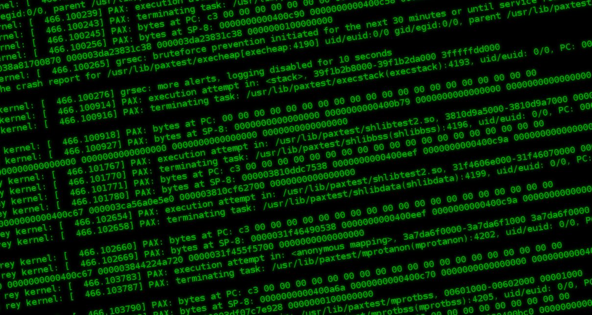
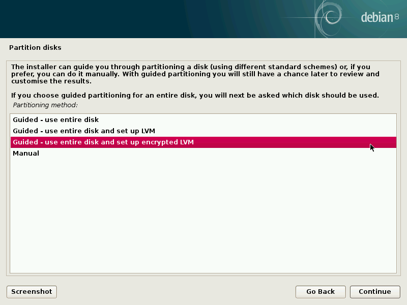
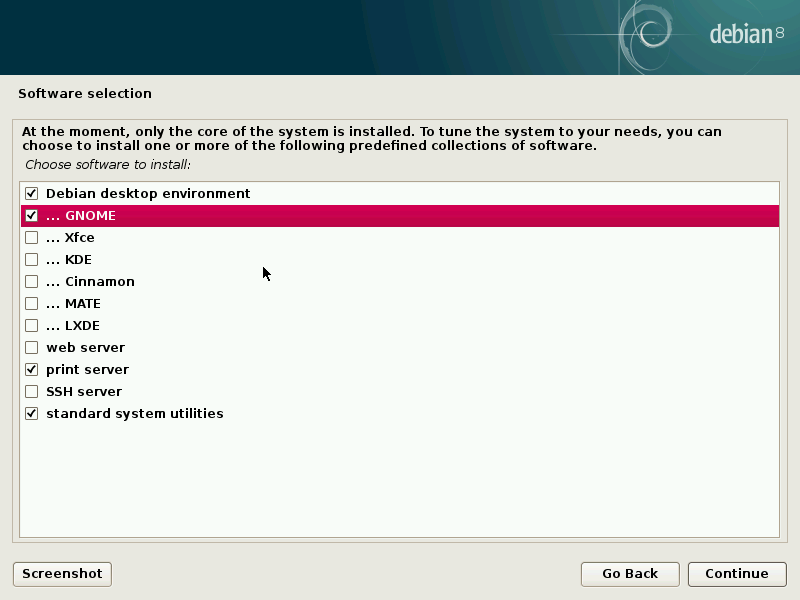
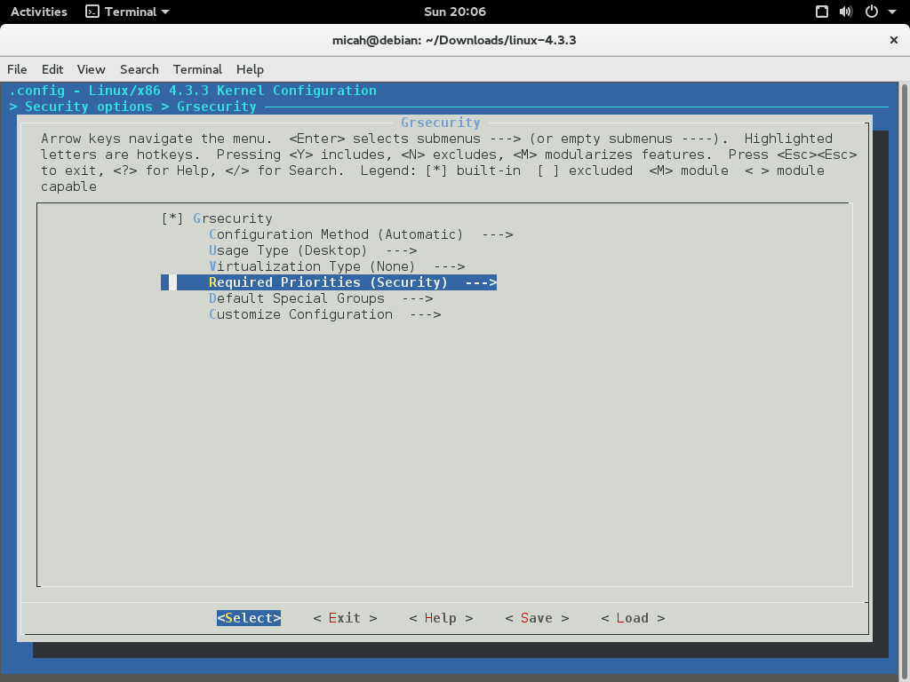
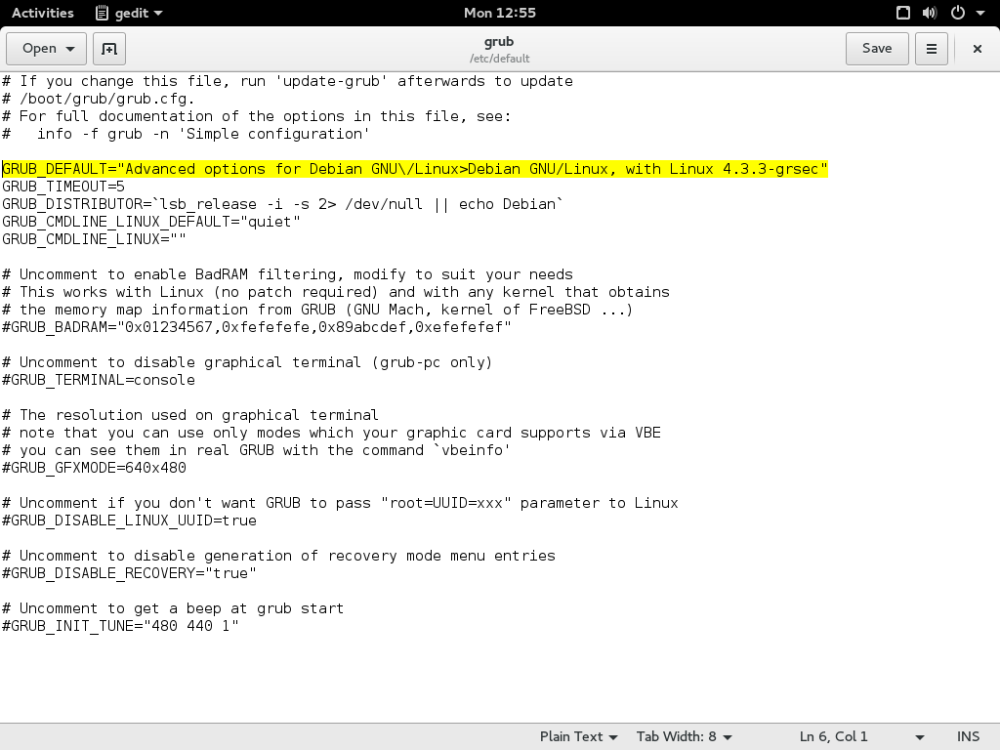
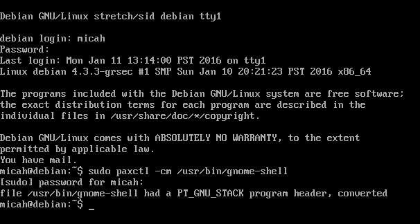

Hardening Debian for the Desktop Using Grsecurity
I recently built a desktop system that I think is reasonably secure. It’s running Debian sid, also known as “unstable” — though in the Debian desktop world that just means you get to use the newest software. It’s just about as stable as “stable”, and besides, #yolo. It’s also running a grsecurity-patched Linux kernel and PaX, technologies that make Linux way more secure. Grsecurity protects you against memory corruption attacks, such as buffer overflows.
Last October I traveled to Moscow and interviewed Edward Snowden. Here’s one of the things he told me:
“Something that we haven’t seen that we need to see is a greater hardening of the overall kernels of every operating system through things like grsecurity, but unfortunately there’s a big usability gap between the capabilities that are out there, that are possible, and what is attainable for the average user.”
Since I just set up Debian with a grsec kernel, I figured I’d write a tutorial for how to do it. It’s still a long way before the average user can take advantage of this stuff – it breaks everything, and the user needs to learn how to diagnose and fix it themselves – but I think that it’s well within the capabilities of Linux nerds who are comfortable using a terminal. You can probably also follow along no matter what Linux distribution you’re using. Also, I’m fairly new to grsecurity myself, so if you have tips or suggestions, or if I got something wrong, please post in the comments.
Grsecurity can be used with very little configuration. Just by baking it into your kernel, entire classes of exploits will fail to work against you, but those same exploits will succeed against someone running a vanilla Linux kernel. Grsecurity also lets you enforce access controls, but that’s outside the scope of this article. Just running a grsec kernel gives you a lot of protection for free.
First, I’m going to explain a little bit about what grsec is and how it protects you. Then I’m going to install Debian and upgrade it to sid. Then I’m going to download the Linux source code and the grsecurity patch, verify digital signatures, patch the Linux kernel, and finally compile it. (If you’ve never compiled the Linux kernel before, you’re in for a treat!) Then I’m going to show you how to use paxctl to turn off certain PaX protections on specific binaries so that they can run without crashing. And finally, I’m going to briefly show you how to troubleshoot grsec and PaX, so you can make software work that would otherwise crash, all on your own.
How does grsecurity make Linux more secure?
Memory corruption attacks normally work something like this: The target accepts malicious input into a program (maybe they load a GIF in an image viewing program, or a document in LibreOffice, or a malformed PGP public key in GnuPG). This input includes an exploit – some code that triggers a security bug in whatever software it’s targeting – as well as a small block of malicious code called shellcode. When the buggy software parses the input, the exploit takes over the flow of execution and jumps into the attacker’s shellcode. Shellcode can do many different things, but it commonly gives the attacker a remote shell – basically, letting them run commands on the victim’s computer (with the permissions of the user who was running the program that got hacked).
Grsecurity protects you by being extremely strict about which parts of memory are allowed to get executed. If it sees a program try to execute some code in the wrong part of memory, it kills the process, which will thwart attacks. So if a target using a grsec-patched kernel loads a malicious PDF in a vulnerable PDF reader, and it exploits a bug and tries to jump to shellcode, grsec will kill the process and log this to /var/log/syslog.
Unfortunately, grsec doesn’t know which programs are supposed to jump into user-loaded memory – it turns out quite a few programs do. For example, web browsers are able to load websites that include JavaScript. In order to improve performance, they convert the JavaScript code to machine code and then jump into it to execute it (this is called Just In Time compilation, or JIT). When grsec notices this, it will kill your web browser process.
You can still run a web browser with grsec, but you need to set a PaX flag (more on this below) to disable memory protections on that specific executable binary. This means your browser won’t immediately crash when you open it, but it also means that if an attacker is able to exploit a bug in it, they may be able to succeed in running their shellcode. Likewise, you often need to disable memory protection on programming language interpreters, such as /usr/bin/python2, /usr/bin/python3, and /usr/lib/jvm/java-7-openjdk-amd64/jre/bin/java.
So it’s not perfect. But even with disabling memory protections on specific binaries, you still get a lot of protection. Most programs work fine without having to disable any protections, and grsec makes it extremely hard for an attacker to escalate privileges. So if someone does manage to hack your web browser and get a shell, grsec will probably prevent them from getting root. Or if you’re a web developer and are running Apache with an old vulnerable WordPress on it that someone on your wifi notices and hacks, grsec will probably prevent them from accessing any data that isn’t readable from the www-data user, even if they come armed with Linux privilege escalation exploits.
Installing Debian sid
Debian doesn’t release sid installation images. Instead you need to install an earlier version of Debian and upgrade to sid. So go and grab the latest stable netinst iso, probably the amd64 one.
You also may want to verify the signature of the iso. As of this writing, the latest stable is 8.2.0, and the iso URL is http://cdimage.debian.org/debian-cd/8.2.0/amd64/iso-cd/debian-8.2.0-amd64-netinst.iso. If you drop the filename part of the path and just load http://cdimage.debian.org/debian-cd/8.2.0/amd64/iso-cd/, you’ll see several files to downloading, including SHA512 and SHA512.sign. Download both of those. The SHA512 file contains SHA512 checksums of all of the isos for that version of Debian, including debian-8.2.0-amd64-netinst.iso.
Make sure you have the key that Debian uses to sign their releases. You can find its fingerprint here. For Debian 8, the signing key fingerprint is DF9B 9C49 EAA9 2984 3258 9D76 DA87 E80D 6294 BE9B (as of the time of writing), and you can get the key by running this:
$ gpg --recv-keys DF9B9C49EAA9298432589D76DA87E80D6294BE9B
Now you can verify the signature:
$ gpg --verify SHA512SUMS.sign
gpg: assuming signed data in 'SHA512SUMS'
gpg: Signature made Fri 11 Sep 2015 08:13:34 AM PDT using RSA key ID 6294BE9B
gpg: Good signature from "Debian CD signing key <debian-cd@lists.debian.org>" [unknown]
gpg: WARNING: This key is not certified with a trusted signature!
gpg: There is no indication that the signature belongs to the owner.
Primary key fingerprint: DF9B 9C49 EAA9 2984 3258 9D76 DA87 E80D 6294 BE9B
Make sure it says Good signature from "Debian CD signing key <debian-cd@lists.debian.org>". Great! Now, take a SHA512 checksum of the iso (note that your checksum might be different, if you’ve downloaded a newer version of Debian than I did):
$ sha512sum debian-8.2.0-amd64-netinst.iso
923cd1bfbfa62d78aecaa92d919ee54a95c8fca834b427502847228cf06155e7243875f59279b0bf6bfd1b579cbe2f1bc80528a265dafddee9a9d2a197ef3806 debian-8.2.0-amd64-netinst.iso
Now let’s check to see if that checksum is in the SHA512 file.
$ cat SHA512SUMS | grep 923cd1bfbfa62d78aecaa92d919ee54a95c8fca834b427502847228cf06155e7243875f59279b0bf6bfd1b579cbe2f1bc80528a265dafddee9a9d2a197ef3806
923cd1bfbfa62d78aecaa92d919ee54a95c8fca834b427502847228cf06155e7243875f59279b0bf6bfd1b579cbe2f1bc80528a265dafddee9a9d2a197ef3806 debian-8.2.0-amd64-netinst.iso
Great, the signed SHA512 file shows the same checksum for debian-8.2.0-amd64-netinst.iso that I got manually. This means that I’ve confirmed that the Debian netinst iso I downloaded hasn’t been tampered with.
Finally, burn the iso to a CD or dd it to a USB stick, boot to it, and install Debian.
Note that when it asks for you to come up with a root password, you can leave it blank. If you do this, then Debian will make your user a sudoer. This might be more familiar to you if you’re used to Ubuntu or Mac OS X.
When you get to the “Partition disks” screen, choose “Guided – use entire disk and set up encrypted LVM” in order to set up full disk encryption. You’ll need to come up with a strong passphrase.

When you get to the “Software selection” screen, make sure to select GNOME as your desktop environment. That’s what I’m using, and this tutorial includes setting a PaX flag to make GNOME work.

Reboot into your freshly installed Debian, mount your encrypted hard drive, and login. Now it’s time to upgrade from stable to sid. Open a terminal and edit the /etc/apt/source.list file as root.
It starts out looking like this:
#
# deb cdrom:[Debian GNU/Linux 8.2.0 _Jessie_ - Official amd64 NETINST Binary-1 20150906-11:09]/ jessie main
#deb cdrom:[Debian GNU/Linux 8.2.0 _Jessie_ - Official amd64 NETINST Binary-1 20150906-11:09]/ jessie main
deb http://ftp.us.debian.org/debian/ jessie main
deb-src http://ftp.us.debian.org/debian/ jessie main
deb http://security.debian.org/ jessie/updates main
deb-src http://security.debian.org/ jessie/updates main
# jessie-updates, previously known as 'volatile'
deb http://ftp.us.debian.org/debian/ jessie-updates main
deb-src http://ftp.us.debian.org/debian/ jessie-updates main
We can delete the cdrom comments, and also we can delete the security and updates repositories. Since we’re updating to sid, we get all of the latest versions of all packages, which already includes security updates. And finally, change the “jessie” to “sid”, so that the result file looks like this:
deb http://ftp.us.debian.org/debian/ sid main
deb-src http://ftp.us.debian.org/debian/ sid main
Save and exit. Now, update all of the software. This will take awhile. And finally, reboot into sid.
$ sudo apt-get update
$ sudo apt-get dist-upgrade
$ sudo apt-get autoremove
$ sudo reboot
Compiling the grsec-patched Linux kernel
The Debian wiki’s grsecurity page implies that linux-grsec is packaged in sid already, but it doesn’t seem available yet. In the future this will be much simpler, but for now we can compile the Linux kernel ourselves.
Update: Grsecurity is indeed packaged in sid. The package name (right now) is linux-image-4.3.0-1-grsec-amd64, so you can apt-get install that instead of compiling it yourself if you want.

Start by installing dependencies:
$ sudo apt-get install libncurses5-dev build-essential fakeroot kernel-package gcc-5 gcc-5-plugin-dev make
Download the public keys that are used to sign the Linux kernel source as well as the grsecurity patch. You can find the latest Linux kernel signing key here, and you you can find the latest grsecurity signing key at the bottom of this page.
At the time of writing, here’s how to download the two signing keys:
$ gpg --recv-keys 647F28654894E3BD457199BE38DBBDC86092693E
$ gpg --recv-keys DE9452CE46F42094907F108B44D1C0F82525FE49
Now download the Linux source code and the grsecurity patch. You’re going to need to download the latest stable version (not any of the longterm versions), because the grsecurity project only releases that version publicly. Because these versions numbers change constantly, I’m not going to provide direct links.
Download the latest stable Linux source, as well as the associated PGP signature file, from kernel.org. The files I’m downloading are called linux-4.3.3.tar.xz and linux-4.3.3.tar.sign.
Download the corresponding grsecurity patch, as well as the associated PGP signature file, from grsecurity.net. This will be under the header “test kernel patch”. The files I’m downloading are called grsecurity-3.1-4.3.3-201601051958.patch and grsecurity-3.1-4.3.3-201601051958.patch.sig.
If you’re following along with a version of Linux that’s newer than 4.3.3, type the following instructions yourself instead of copying and pasting, so that the commands correspond with the version of Linux and grsec that you downloaded.
Decompress the Linux source code.
$ unxz linux-4.3.3.tar.xz
Verify the signatures. The output of both of these should say “Good signature”.
$ gpg --verify linux-4.3.3.tar.sign
$ gpg --verify grsecurity-3.1-4.3.3-201601051958.patch.sig
If all went well, extract the Linux source code and then apply the grsec patch.
$ tar -xf linux-4.3.3.tar
$ cd linux-4.3.3/
$ patch -p1 < ../grsecurity-3.1-4.3.3-201601051958.patch
Start with your existing Linux kernel configuration. Note that it’s possible that your config file might be named differently if you currently have a different version of the Linux kernel installed, so make sure you use the right filename.
$ cp /boot/config-4.3.0-1-amd64 .config
$ make menuconfig
Navigate to Security options, Grsecurity, and make sure it’s enabled. Then go to Configuration Method and set it to Automatic. Go to Usage Type and change it to Desktop. Go to Virtualization Type and set it to None (unless you’re testing this in a VM, then make sure you choose the right hypervisor). Go to Required Properties and set it to Security.

Now save and exit.
You can use all of your CPU cores to make compiling the Linux kernel faster by running this.
$ export CONCURRENCY_LEVEL="$(grep -c '^processor' /proc/cpuinfo)"
Now compile the kernel. This will probably take a really long time. When you’re done you’ll have a deb file you can install.
$ fakeroot make-kpkg --initrd kernel_image
When this finishes, install the new Linux kernel image.
$ cd ..
$ sudo dpkg -i linux-image-4.3.3-grsec_4.3.3-grsec-10.00.Custom_amd64.deb
Now let’s make sure you GRUB boots into this kernel image by default. Figure out what the kernel version string that GRUB will use is called.
$ grep menuentry /boot/grub/grub.cfg | cut -d "'" -f2 | grep "grsec$"
Debian GNU/Linux, with Linux 4.3.3-grsec
Now edit /etc/default/grub and change the GRUB_DEFAULT= line be to "Advanced options for Debian GNU\/Linux> followed by the kernel version string. Put the whole things in quotes, like this: GRUB_DEFAULT="Advanced options for Debian GNU\/Linux>Debian GNU/Linux, with Linux 4.3.3-grsec"

Save and exit, and then upgrade grub.
$ sudo update-grub
Before rebooting into the grsec kernel, we need to install PaX tools, which will let us disable memory protections on specific userland binaries.
$ sudo apt-get install paxtest paxctl
$ sudo reboot
When you boot into the new kernel, everything will be broken.
This is because grsec is killing the gnome-shell process. In order to make your desktop environment work, you need to disable memory protections on the gnome-shell binary.
Press Ctrl-Alt F1 to switch to tty1 and login without graphics. Then disable memory protections on /usr/bin/gnome-shell using paxctl (more on how this tool works below).

Here’s the command to run.
$ sudo paxctl -cm /usr/bin/gnome-shell
Reboot again, and this time GNOME should work.
$ sudo reboot
Login to your account, and open a terminal to do a few final steps.
Edit /etc/sysctl.conf (as root) and add these lines:
kernel.grsecurity.rwxmap_logging = 0
kernel.grsecurity.grsec_lock = 1
And activate them.
$ sudo sysctl -p
Now, make sure that grsecurity is really working like it should.
$ paxtest blackhat
PaXtest - Copyright(c) 2003,2004 by Peter Busser
Released under the GNU Public Licence version 2 or later
Writing output to /home/micah/paxtest.log
It may take a while for the tests to complete
Test results:
PaXtest - Copyright(c) 2003,2004 by Peter Busser
Released under the GNU Public Licence version 2 or later
Mode: Blackhat
Linux rey 4.3.3-grsec #3 SMP Mon Jan 11 12:42:40 PST 2016 x86_64 GNU/Linux
Executable anonymous mapping : Killed
Executable bss : Killed
Executable data : Killed
Executable heap : Killed
Executable stack : Killed
Executable shared library bss : Killed
Executable shared library data : Killed
Executable anonymous mapping (mprotect) : Killed
Executable bss (mprotect) : Killed
Executable data (mprotect) : Killed
Executable heap (mprotect) : Killed
Executable stack (mprotect) : Killed
Executable shared library bss (mprotect) : Killed
Executable shared library data (mprotect): Killed
Writable text segments : Killed
Anonymous mapping randomisation test : 28 bits (guessed)
Heap randomisation test (ET_EXEC) : 23 bits (guessed)
Heap randomisation test (PIE) : 35 bits (guessed)
Main executable randomisation (ET_EXEC) : 28 bits (guessed)
Main executable randomisation (PIE) : 28 bits (guessed)
Shared library randomisation test : 28 bits (guessed)
Stack randomisation test (SEGMEXEC) : 35 bits (guessed)
Stack randomisation test (PAGEEXEC) : 35 bits (guessed)
Arg/env randomisation test (SEGMEXEC) : 39 bits (guessed)
Arg/env randomisation test (PAGEEXEC) : 39 bits (guessed)
Randomization under memory exhaustion @~0: 29 bits (guessed)
Randomization under memory exhaustion @0 : 28 bits (guessed)
Return to function (strcpy) : paxtest: return address contains a NULL byte.
Return to function (memcpy) : Killed
Return to function (strcpy, PIE) : paxtest: return address contains a NULL byte.
Return to function (memcpy, PIE) : Killed
Congratulations, you’re running Debian with a hardened grsecurity kernel! But you’re not done yet. Lots of your software is going to crash as soon as your run it. The next section shows you how to fix that.
Thanks to the Kevin Gallagher and the Freedom of the Press Foundation staff for making a great guide that I mostly based this section off of.
Setting PaX flags so you can actually use your computer
Grsecurity automatically kills processes that use memory in a way that could be an attack. But many programs legitimately use memory this way. In order to use those programs, you need to set PaX flags on their binaries — these flags actually get stored in the binary file’s header. paxctl is a program that lets you view and set these flags.
$ sudo paxctl -h
PaX control v0.9
Copyright 2004,2005,2006,2007,2009,2010,2011,2012,2014 PaX Team
usage: paxctl
options:
-p: disable PAGEEXEC -P: enable PAGEEXEC
-e: disable EMUTRAMP -E: enable EMUTRAMP
-m: disable MPROTECT -M: enable MPROTECT
-r: disable RANDMMAP -R: enable RANDMMAP
-x: disable RANDEXEC -X: enable RANDEXEC
-s: disable SEGMEXEC -S: enable SEGMEXEC
-v: view flags -z: restore default flags
-q: suppress error messages -Q: report flags in short format
-c: convert PT_GNU_STACK into PT_PAX_FLAGS (see manpage!)
-C: create PT_PAX_FLAGS (see manpage!)
Earlier we ran paxctl -cm /usr/bin/gnome-shell. The -c modified the binary so that it’s able to accept PaX flags, and the -m disabled MPROTECT — basically meaning that that specific binary is allowed to do stuff that grsec would kill other binaries it caught doing. You can view the flags that are set like this.
$ sudo paxctl -v /usr/bin/gnome-shell
PaX control v0.9
Copyright 2004,2005,2006,2007,2009,2010,2011,2012,2014 PaX Team
- PaX flags: -----m-x-e-- [/usr/bin/gnome-shell]
MPROTECT is disabled
RANDEXEC is disabled
EMUTRAMP is disabled
For the most part, all you’ll ever need to do is use paxctl -cm on a binary that you trust to run without MPROTECT. You can always run paxctl -M to enable MPROTECT on it again.
There’s also a cool looking project called paxrat, developed by Subgraph, that helps you manage PaX flags. It’s not yet packaged for Debian, and I haven’t yet tested it out, but I look forward to playing with it. For now we can just use paxctl.
To start, let’s set PaX flags for some GRUB binaries.
$ sudo paxctl -cpm /usr/sbin/grub-probe
$ sudo paxctl -cpm /usr/sbin/grub-mkdevicemap
$ sudo paxctl -cpm /usr/sbin/grub-install
$ sudo paxctl -cpm /usr/bin/grub-script-check
$ sudo paxctl -cpm /usr/bin/grub-mount
And python interpreters.
$ sudo paxctl -cm /usr/bin/python2
$ sudo paxctl -cm /usr/bin/python3
One issue I’ve run into when trying to set PaX flags with paxctl is an error message that says “Text file busy”. If you run into this issue, you can kill any processes of that binary that are running and then try again. If you have a hard time keeping a process killed, you might try rebooting into recovery mode to set its PaX flags.
How do you know what binaries you should set PaX flags on? Grsec logs its error messages to /var/log/syslog, so let’s start by opening a new terminal and watching all of the grsec error messages that scroll by.
$ sudo tail -f /var/log/syslog | grep grsec
Now, in a new terminal window, try opening Iceweasel by running its binary.
$ iceweasel
Gtk-Message: Failed to load module "canberra-gtk-module"
Killed
Iceweasel was killed by grsec, and here’s the error message that was logged to /var/log/syslog.
Jan 11 18:18:25 debian kernel: [ 286.128581] grsec: denied resource by requesting 4096 for RLIMIT_CORE against limit 0 for /usr/lib/iceweasel/iceweasel[iceweasel:1991] uuid/euid:1000/1000 gid:egid:1000/1000, parent /bin/bash[1417] uid/euid:1000/1000 gid/egid:1000/1000
The important bits there are grsec: denied resource and /usr/lib/iceweasel/iceweasel. (Note that /usr/bin/iceweasel is a symlink to /usr/lib/iceweasel/iceweasel, so this is in fact the Iceweasel binary.)
If you want to use Iceweasel (and risk turning off its memory protections), then use paxctl to disable MPROTECT.
$ sudo paxctl -cm /usr/lib/iceweasel/iceweasel
Now trying running iceweasel again. It should just open this time!
Now, try opening a new tab. My syslog window throws two more errors.
Jan 11 18:26:48 debian kernel: [ 788.651798] grsec: denied resource overstep by requesting 4096 for RLIMIT_CORE against limit 0 for /usr/lib/iceweasel/plugin-container[Web Content:2100] uid/euid:1000/1000 gid/egid:1000/1000, parent /usr/lib/iceweasel/iceweasel[Gecko_IOThread:2041] uid/euid:1000/1000 gid/egid:1000/1000
Jan 11 18:26:48 debian kernel: [ 788.818013] grsec: denied resource overstep by requesting 4096 for RLIMIT_CORE against limit 0 for /usr/lib/iceweasel/plugin-container[Web Content:2114] uid/euid:1000/1000 gid/egid:1000/1000, parent /usr/lib/iceweasel/iceweasel[Gecko_IOThread:2041] uid/euid:1000/1000 gid/egid:1000/1000
It looks like each time you open a tab, Iceweasel tries running /usr/lib/iceweasel/plugin-container in a subprocess, and grsec kills that process. However, Iceweasel appears to work fine without it, so no big deal. Since it hasn’t affected me yet, I’m going to keep MPROTECT enabled on that binary. If you need to run a plugin in Iceweasel and grsec prevents that from working, then you might consider disabling MPROTECT.
Let’s try another: Tor Browser. The easiest way to install Tor Browser is to use Tor Browser Launcher (a piece of software I wrote… ehem.)
Edit /etc/apt/sources.list as root, add the “contrib” repository.
deb http://ftp.us.debian.org/debian/ sid main contrib
deb-src http://ftp.us.debian.org/debian/ sid main contrib
Now install Tor Browser Launcher.
$ sudo apt-get update
$ sudo apt-get install torbrowser-launcher
Now try launching Tor Browser.
$ torbrowser-launcher
It should pop up a window and download the Tor Browser tarball for the first time. It should also download its PGP signature, verify the signature, extract the tarball, and then try to launch Tor Browser. But when it does, grsec kills the process.
Jan 11 18:38:24 debian kernel: [ 1485.423982] grsec: denied resource overstep by requesting 4096 for RLIMIT_CORE against limit 0 for /home/micah/.local/share/torbrowser/tbb/x86_64/tor-browser_en-US/Browser/firefox[firefox:3954] uid/euid:1000/1000 gid/egid:1000/1000, parent /lib/systemd/systemd[systemd:1] uid/euid:0/0 gid/egid:0/0
Tor Browser is trying to run the /home/micah/.local/share/torbrowser/tbb/x86_64/tor-browser_en-US/Browser/firefox binary, and it fails for the exact same reason that Iceweasel fails. To fix it, disable MPROTECT on that binary.
$ sudo paxctl -cm /home/micah/.local/share/torbrowser/tbb/x86_64/tor-browser_en-US/Browser/firefox
$ torbrowser-launcher
This time, Tor Browser will launch without any crashes or grsec errors.
How does Debian with grsecurity compare to Qubes?
I’ve written in the past about how awesome Qubes is, which is also a reasonably secure operating system. So how does it compare to Debian with a grsec kernel?
In Qubes, you separate your computer into different security domains (also known as AppVMs), but in each of these domains you’re basically running a normal, non-hardened OS. If an attacker hacks you, they only have access to data in a single security domain, and the rest of your data remains safe. In Debian/grsec — like in every non-Qubes operating system that’s currently available, including Windows, Mac OS X, Ubuntu, Arch, etc. — you only have one security domain, so if an attacker hacks you it’s basically game over. But grsec makes it harder for an attacker to successfully hack you. (I’m looking forward to the release Subgraph OS, which will be the second desktop operating system designed for compartmentalization, and which will be based on Debian, grsec, and Linux containers.)
For example, let’s say an attacker sends you a malicious PDF that secretly exploits a bug in Evince, a popular Linux PDF viewer. Pretend you’re running Qubes and decide to open this PDF in your “personal” security domain that you use for non-work related stuff (really you should open it in a disposable VM, but maybe you didn’t think it was that risky or something). The PDF exploits the bug in Evince and jumps into the attacker’s shellcode, and now the attacker can run whatever commands they want and access any of your data, but only within your “personal” AppVM. They can’t access any of the files in your “work” domain, or your “email” domain, or the networkless “vault” domain that you use to store your PGP secret keys and password databases.
Now pretend you’re running Debian/grsec. You open the PDF, it exploits the bug in Evince and tries to jump to the attacker’s shellcode, but grsec detects that your Evince process is trying to execute code in an off-limits part of memory and kills the process. Evince immediately closes, grsec logs an error to syslog, and you don’t get hacked at all. In this case, grsec completely prevented the attack, while Qubes only contained it.
But now let’s change the example. Instead of Evince, the attacker is exploiting a bug in Iceweasel. If you’re using Qubes, the attacker only hacks the domain that you’re running Iceweasel in. If you’re using Debian/grsec (and you disabled MPROTECT on /usr/lib/iceweasel/iceweasel like we did above), the attacker’s shellcode will run and they’ll have access to all of your files, be able to log your keystrokes, etc. They might have a very difficult time getting root, which will make it harder for them to install a persistent backdoor, but that’s little consolation.
Hardening your kernel with grsecurity is great because it makes it much harder for attacks against you to succeed, but it still doesn’t make it so you can compartmentalize your computer the way that Qubes does. It’s also important to remember that grsec mostly protects you against memory corruption bugs, but other types of security issues exist too. You might run an ssh server and use a crappy password. You might get tricked into copying and pasting something malicious into your terminal. You might be running buggy software that can be exploited without jumping into forbidden memory space, so grsec won’t catch it.
There’s another big difference between Qubes and Debian/grsec: Usability.
Qubes isn’t terribly hard to use (for experienced Linux nerds), but it does require shifting the paradigm about how you think about operating systems, and working around software that isn’t designed for it. For example, it’s not uncommon to have four or five different web browsers open at the same time, all running in different security domains for different purposes. If someone sends you a link, you can’t just click it. You have to decide which domain you’d like to open it in first, and then copy it into that domain’s clipboard before pasting it into a browser. There’s also still a lot of work to be done to make USB devices usable in Qubes. If you want to do some Android development, it’s not the simplest task yet to get Android Studio installed and communicating with your phone over a USB port in an AppVM. Same with video chat. And same with figuring out a workflow to take a screenshot, crop it, and then tweet it. Many tasks are complicated in Qubes simply because you have to deal with compartmentalization and the limitations of virtualizing all of your software — but this is also what gives Qubes its strength.
Debian with grsec doesn’t require this paradigm shift. Once you get past the initial PaX learning curve and make sure that the software you use most often all works, then it’s just like using any other operating system — but you get the invisible-but-awesome benefits of having a hardened kernel. USB devices, webcams, screenshots, and everything else work just like you’re used to. So if you’re not quite ready for Qubes, or if you can’t run Qubes for your specific work for whatever reason, Debian/grsec might be a good choice for you.
The best of both worlds would be running Qubes, but with AppVMs that have grsecurity-patched Linux kernels. This is entirely possible, but no one has yet succeeded in doing it.


Legacy comments, imported from previous version of this blog:
Kevin Gallagher
January 15, 2016 05:03 PM
Also, the next level of hardening is using the grsecurity RBAC, which is extremely powerful. It has a utility called gradm which you can put in learning mode, then use your computer as you normally would and it will write a ton of data relating to your usage patterns and every permission/role/access/capability that is required. Then, it can write a policy file for the RBAC based on this data, which, when you enable it, will explicitly grant access only to the things you need to do. It's super cool!
pablo
March 9, 2017 04:57 AM
Don't forget that in order to have a FULL protection with RBAC you must not perform any administrative task (e.g. install new packages, enable/disable services....), even if you're root. Maybe an effective protection with RBAC is something too strict for a Desktop use, but I agree that is extremely powerful
pablo
March 9, 2017 04:58 AM
I mean during Learning Mode*
Patrick
January 31, 2016 02:13 AM
Great article. To help some users with firmware, here's excellent reference:
https://www.linux.com/learn/tutorials/806072-how-to-install-firmware-in-debian-to-enable-wireless-video-or-sound/
Also, I recommend users to edit /etc/apt/sources.list to have the following -
deb http://ftp.it.debian.org/debian/ sid main contrib non-free deb-src http://ftp.it.debian.org/debian/ sid main contrib non-free
luis
October 19, 2016 04:09 AM
After all the procedures i came across another problem when compiling the kernel. Can anyone plz give a look at the erros i got and try to give me some explanation? http://beta.pastee.com/4ubju
Thanks
Tomas
October 29, 2016 10:24 AM
Have you read the article? This should fix it for you:
apt-get install kernel-package
unknown
February 14, 2016 10:52 AM
Make sure add HTTPS repo , before downloading torbrowser bundle , and add Debian tor Debian repo (As explained by ioerror ) Commenting from place where anonymous dangerous than normal
Micah Lee
February 15, 2016 11:45 AM
Using https repos and including the Tor repo installing of installing it from Debian are good things to do, but aren't necessary for security. Tor Browser Launcher (used in this blog post) downloads Tor Browser over https with certificate pinning, and verifies the PGP signature for you.
anon
February 16, 2016 12:15 PM
Agree, but what if tor download sites are blocked , tor browser launcher is great ( security wise ) , for first time to download tor we need rely on Debian repo tor (system tor option ) , but I'm afraid when I download tor from Debian http repo MITM guys can know I'm downloading tor ( once I download tor I use obfs proxy for connect and download through tor browser launcher ) so my traffic doesn't look like tor , sorry if I'm going off traffic
Zaki Manian
January 16, 2016 09:30 AM
Another usability consideration I can think of is that Qubes doesn't provide GPU access outside dom0, webGL is kinda nice and half the CPU die is GPU, it's kind of a shame not to use it
Jasper
February 3, 2016 07:02 AM
Hi Micah, I´d like to ask something. I'm willing to switch to qubes but what's keeping me from using it is KeePass's auto-type. How would I go about managing passwords in a Vault VM that can't sync my database with a remote server, neither can I efficiently get passwords from the Vault to my browser VM. (Ignoring the ctrl+c, ctrl+shift+c, ctrl+shift+v, ctrl+v thing)
Micah Lee
February 3, 2016 07:23 AM
If you're willing to sync your password database to a remote server, then you could always make an AppVM for KeePass that has firewall rules that block everything except the connection to your remote server. And if the ctrl-c, ctrl-shift-c, ctrl-shift-v, ctrl-v thing is too much for you, you could always just keep your KeePass database in the AppVM that you use to browse the web, and use it's auto-type feature. In both of these cases your passwords might be slightly less protected, but no less than just using a password database in a normal operating system. And you still get all the other benefits of Qubes.
Jasper
February 3, 2016 07:39 AM
Thanks! I'll make the firewall whitelist just the server and just do the the ctrl-c, ctrl-shift-c, ctrl-shift-v, ctrl-v thing. I'm hoping Qubes could at some point have some sort of system similar to 'split GPG'. So that an AppVM can request credentials from the KeePass VM.
P.S. you said "if you're willing to sync the database to a remote server" isn't the database secure enough to do such a thing? (assume a 7+ word diceware passphrase)
Josh Glenn
March 15, 2017 12:24 AM
Thanks for the great post, saved me a reinstall of Ubuntu after installing coldkernel.
griffin
May 26, 2016 01:00 PM
I use xfce, how do I replace below gnome line for xfce4? " $ sudo paxctl -cm /usr/bin/gnome-shell "
thank you.
mrlynch
June 24, 2016 09:52 AM
sudo paxctl -cm /usr/bin/xfce4-session
that might do the trick
cheers
Mike
November 28, 2016 01:48 PM
Anybody know the corresponding command for kde desktop? I've tried 'sudo paxctl -cm /usr/bin/startkde' doesn't seem to want to work BTW I followed this tutorial using Arch Linux, and was able to get a gnome desktop working... Just like me some plasma better.
Great write up Micah
Mike
December 9, 2016 08:41 AM
(SOLVED) sudo paxctl -cm /usr/bin/plasmashell For KDE Plasma Desktop
Kevin Gallagher
January 15, 2016 04:57 PM
Yay! Great post, and thanks for the shoutout. Two notes:
Desktop users may want to compile the kernel_headers package too (add it to the make-kpkg command), since many drivers (ex. Nvidia, Radeon, VirtualBox, Openswan) require the kernel headers to be installed in order for DKMS (Dynamic Kernel Module Support) to work.
Secondly, you may want to look into using paxctld or Subgraph's paxrat for a daemon to manage PaX flags on binaries. The issue is that every time packages are updated (eg. Python, Iceweasel, GRUB) they will lose the headers, making it necessary to run paxctl again. You can make all that configuration persistent in /etc/paxctld.conf, and paxtld will apply the flags on any update to the binaries specified in that configuration file. Unfortunately, neither of these packages are in Debian repos as yet.
nookich
December 4, 2016 11:37 AM
Thanks for a great guide!
I installed grsec in Debian Jessie by installing it from the jessie-backports repo, and it seems to work fine, although I run into some issues when trying to run torbrowser.
I installed torbrowser-launcher and used it to download/install TorBrowser. When I try to start TorBrowser using the launcher, grsec outputs the following to /var/log/syslog: /home/username/.local/share/torbrowser/tbb/x86_64/tor-browser_en-US/start-tor-browser.desktop
When I try to run paxctl -cm on it it reports the error: file /home/username/.local/share/torbrowser/tbb/x86_64/tor-browser_en-US/start-tor-browser.desktop is not a valid ELF executable
Does anyone have any idea on how to allow torbrowser to start?
nookich
December 4, 2016 12:26 PM
Correction: the output to syslog is: grsec: denied untrusted exec (due to not being in trusted group and file in non-root-owned directory) of /home/username/tor-browser_en-US/start-tor-browser.desktop by /home/username/tor-browser_en-US/start-tor-browser.desktop[bash:3258] uid/euid:1000/1000 gid/egid:1000/1000, parent /bin/bash[bash:2379] uid/euid:1000/1000 gid/egid:1000/1000
Tururu
February 12, 2017 06:45 PM
You can add your user to grsec-tpe group
asdf
January 15, 2017 12:30 PM
You will have to disable mprotect for the firefox binary in the folder of the TorBrowser
You can do this by: sudo paxctl -cm /home/username/.local/share/torbrowser/tbb/x86_64/tor-browser_en-US/Browser/firefox
Newsletter CyberSécurité semaine 4 - Adacis
January 23, 2016 12:23 AM
[…] HOT ! Retour d’expérience sur le durcissement Debian avec GrSecurity […]
Corsac
January 17, 2016 06:51 AM
The sysctl interface is enabled.
Patterson
January 17, 2016 03:47 PM
OK, thanks Corsac. There must be something else keeping my machine from working with exactly these steps.
Dg
February 7, 2016 07:43 AM
Thanks for an intersting article. However, I take issue with the use of stock Linux kernel. The inclusion of proprietary firmware means that there is the possibility of backdoors, and if such a malicious firmware program managed to fool the system into thinking it was something else, it could in theory run some code in kernel space. So why use the stock kernel over the Debian kernel or Linux-libre? You could for example just buy a (freedom-respecting) USB wireless adaptor so you can have WiFi. Could grsecurity stop suspicious action by malicious firmware programs? I am not sure but I suspect it would not be effective for such a scenario. Regards
Jonathan
January 18, 2016 09:00 AM
Firejail[1] is a quick and easy solution to contain dangerous applications such as a browser.
I did not try it on a grSec machine yet, though.
[1]- https://firejail.wordpress.com/
Kevin
February 16, 2016 01:41 AM
Can you use Firejail and GRsecurity together? I am thinking of setting up Firejail on the next install. The internet is getting nastier and nastier...
Jonathan Smith
January 16, 2016 07:29 PM
In one of Edward Snowden's revelations, the world got to know that American intelligence agencies routinely intercept, among other stuff, desktop and laptop computers that are on their way from the vendors to their customers. They would install surveillance rootkits on the motherboards of the machines.
Would your hardened Debian be able to prevent or make it harder for the already infected motherboards to surveil on the activities of the computer user?
Micah Lee
January 16, 2016 08:54 PM
Probably not. If you have malicious firmware on your motherboard, you can't be confident about the security of pretty much anything you do on that computer.
Jon
July 29, 2016 06:56 AM
Any chance you could make a guide for integrating GRsecurity with Qubes?
Iron Geek
January 3, 2017 06:48 AM
https://coldhak.ca/blog/2016/12/12/coldkernel-qubes-1.html
Just Paranoid
January 7, 2017 06:04 PM
Just paranoid.
Thanks
RandomName
March 11, 2017 03:01 AM
I do not know that much about this, but no one else has answered yet.
1: It is hard to know if the system is compromised on a closed system. I would suggest checking out the free(as in freedom) hardware(fsf.org/resources/hw) if you really want to be sure.
2: They could use Intel's ME and AMD's PSP. They have this for system management mode(SMM). SMM has access to your CPU, GPU, RAM and internet if I remember correctly. It can also be used to turn your computer on remotely and operate without the users knowledge.
3: This is a bit complicated. The PowerPC is open but really expensive. There is a Chromebook that uses coreboot and an ARM CPU, it should at least be safer than Intel or AMD. There have been some attempts to overwrite Intel ME on some Lenovo laptops to install coreboot. Doing that involves opening the laptop and physically connecting to a flash chip, but you do not need to solder anything.
Jared Jennings
February 11, 2016 12:51 PM
This is a very clear howto on an important topic, thanks! One tip: When you pipe tail -f though grep, it's good to hand grep the --line-buffered switch.
Nick
May 15, 2016 02:14 PM
Hm.. interesting article.
Now i know why my debian unstable system wouldn't boot with grsecurity kernel. But when the boot process get stopped by grsecurity, and won't start the graphical desktop, i didn't have the option to use Ctrl+Alt+F1 for further login. I must use the "single" option via grub kernel parameter, or i never see any tty. I also didn't compile the kernel with grsecurity, there was an usable patched binary kernel in the unstable repository. My system is fully encrypted too, with seperated /, /tmp, /var, /boot, /home, /var/log volumes. The / and /boot volumes are always gets mounted as read-only. This is perhaps an problem for grsecurity on first start. Any ideas?
Luis
October 18, 2016 06:42 AM
Hi, I tried to install grsec on my disto Debian Jessie 8 Stable. I did the exactly steps, changed the sources.list did the apt-get dist-upgrade etc (..) reboot. However when I start to compile and try to install dependencies ( $ sudo apt-get install libncurses5-dev build-essential fakeroot kernel-package gcc-5 gcc-5-plugin-dev make ) I get this error http://beta.pastee.com/29ck9.
Can someone help me to get pass this step?
luis
October 19, 2016 04:07 AM
Problem solved. The repositories on sources.list were not correct.
Diederik de Haas
January 16, 2016 06:40 PM
It's been a while since I last used it, but by using the installer from https://www.debian.org/devel/debian-installer/ you can install testing directly and if I'm not mistaken also sid directly. I think it's in one of the Advanced menu sections.
Diederik de Haas
January 16, 2016 06:44 PM
Found it: https://wiki.debian.org/InstallFAQ#Q._How_do_I_install_.22unstable.22_.28.22sid.22.29.3F
aer
February 16, 2016 04:08 PM
It's good to have a hardened Linux kernel so the feeling of being secure is really true. To save myself from trouble of getting my hands dirty, I will just install Qube OS.
Joni
February 11, 2016 01:12 PM
Do you think Grsecurity is better than SELinux?
Lionel
February 14, 2016 07:50 AM
SELinux is of the "policy " class: it denies some operations to some programs. Most distros have sub-par support for SELinux and many people disable it because it's too annoying for their particular use case. PaX/grsecurity is of the "anti-exploitation" class: its wide set of features provides various means to prevent vulnerabilities from being successfully exploited at all, or at least making attackers' lives exploiting vulnerabilities very much harder.
SELinux on a mainline kernel is powerless against the proofs of concept for dangerous kernel holes which are discussed once in every while on LWN, while a well-configured PaX/grsecurity kernel kills them immediately, because:
Two recent holes in mainline kernels are based on reference count overflows, which PaX's REFCOUNT has been protecting against for years - simply killing the process upon an attempt to exploit a refcount overflow.
I could also mention the better randomization of ASLR + mmap, the ability to randomize the kernel stack base, memory sanitization of areas that mainline doesn't sanitize (and therefore elimination of various information leaks or use-after-free errors), usercopy hardening, protection against a number of integer overflows, or the eviction of recent features whose insecure implementation yields a stream of vulnerabilities, such as the eBPF JIT. SELinux or the other "policy" frameworks provide none of those features.
Patterson
January 17, 2016 02:58 AM
A note here for anyone who chooses to use apt-get for the pre-compiled package linux-image-4.3.0-1-grsec-amd64, rather than compiling the kernel. It seems that grsec's sysctl interface isn't enabled (I find /proc/sys/kernel/grsecurity/chroot_deny_sysctl=1 in the package; more at [0]). It would be enabled if you were to compile it with your steps. Runtime changes to grsec kernel params such as tpe (which I needed to disable to run torbrowser-launcher or any personal scripts; still figuring that part out) are then denied at your 'sudo sysctl -p' step.
Please correct me if I'm wrong, I thought this info should make it here early in case others are deterred by this step Google didn't hit the answer very quickly). Thanks Micah, love your work! This article pushed me finally to try grsec and more.
[0]https://en.wikibooks.org/wiki/Grsecurity/Configuring_and_Installing_grsecurity#Configuring_grsecurity_and_PaX_Features
David man
January 14, 2018 09:46 AM
Hello, Are the test patch have any valuable , and can be used (compared to release patch) ?
Thank you,
Anon
October 2, 2016 12:45 PM
Saw you tweeted "Though I'm not sure why "Return to function (memcpy)" is vulnerable in this VM, when grsec kills the process on other systems". Can you please update here if you figure out why? My setup's been giving me the same warnings on both memcpy tests and I've been trying to figure it out for a few days now. Happens on both the repository grsec kernel and compiling my own per above.
Anon
October 4, 2016 02:33 PM
Looks like the difference might be due to a bug in paxtest before v0.9.14. I was able to recreate this by running an older version (0.9.11) of paxtest that claimed the memcpy's were Killed. When I run the newer version of paxtest, the memcpy's are again vulnerable. This appears to be intended behavior to show that this class of attack is hard to defend against: https://forums.grsecurity.net/viewtopic.php?t=1420&highlight=strcpy.
The latest version of paxtest can be downloaded from https://www.grsecurity.net/~spender/. Currently it's paxtest-0.9.15.tar.gz. The ChangeLog inside details the bugfix, at least, I think it's this one:
paxtest (0.9.14-1) stable; urgency=low
Rick Valenzuela
November 3, 2016 11:09 PM
FYI for those installing from the Debian repo, and especially if you're having trouble at the sysctl step. I was denied trying to activate sysctl , but then was able to change the proper variables/values in /etc/sysctl.d/grsec.conf. I don't know if that's a new sid update, but I've referred to this blog post before and hadn't previously hung up on that step.
Thanks for the tutorial!
LinAdmin
September 26, 2016 05:45 AM
Thanks for this interesting article. Debian Jessie backports now has a grsec kernel:
apt install -t jessie-backports linux-base apt install -t jessie-backports linux-image-grsec-amd64 linux-image-4.6.0-1-grsec-amd64 apt-get install paxtest paxctl
lucas
October 2, 2016 05:18 AM
hi Linadmin, install successfully under jessie cinnamon desktop which crashes partially now, how to proceed at best? Tx
AP
October 29, 2016 11:51 PM
Does this changes the process?
JT. Flemin
August 10, 2018 06:07 PM
any possibility to do this in debian stretch without installing jessie unstable? no?
phil
June 20, 2017 06:42 AM
shame there is no grsec binary kernel in stable. I dont want to use sid.
kekec
January 16, 2016 12:04 AM
hey,
thanks for the great topics here on your blog!
is there any security related reason why you now use Debian and not Ubuntu as you used to?
also: could using disposable VirtualBox VMs for some risky tasks substitute the need for Qubes OS?
thanks!
Micah Lee
January 16, 2016 11:05 AM
You can do this in Ubuntu just the same. There isn't much of a security reason to favor Debian (though there are some things I don't like about Ubuntu security, like how they use short apt repository keys), but there are some privacy reasons, which are easy to overcome if you still like Ubuntu: https://fixubuntu.com/
As far as using VirtualBox VMs for particularly risky stuff, that's not a bad idea, but it's definitely not a substitute for Qubes. That's kind of a blacklist approach: "I think this task is risky, so I'll do it in a VM." But Qubes uses a whitelist approach: "Everything is risky, so make sure I limit the damage of every attack." For example, Qubes protects you against bugs in your wifi driver that could be remotely exploited -- the attacker will just hack your netvm, and won't gain access to all your data.
asdf
August 15, 2016 02:39 AM
I can't verify the kernel. It's signed by FF992F6D and not the official signing key. I've tried re-downloading a bunch of times.
Wtf is going on? Am I doing something wrong?